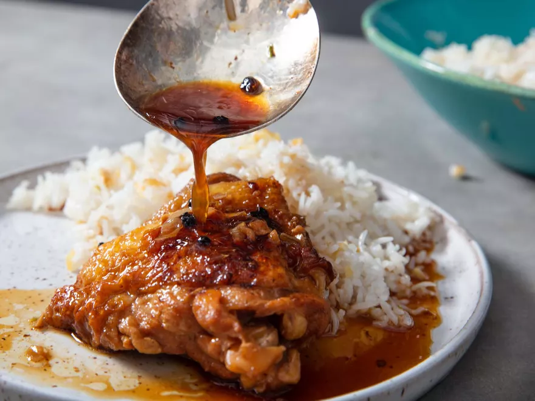

Chicken Adobo Recipe

Description:
Chicken adobo is a dish that comes from the Philippines. Known for its signature tanginess,
adobo is best served with rice, or potatoes. My mom first found out about this recipe through
my aunt, who is a Filipino immigrant. And though it might not be true to the original, her
adobo still hits the spot. This iteration uses a few ingredients to pack maximum flavor.
Ingredients:
- 1 tablesoon cooking oil
- 6 chicken drumsticks
- Salt
- 8 cloves of garlic, minced
- 3 bay leaves, dried
- 2 teaspoons black pepper
- 1 cup water
- 1 cup soy sauce
- 1 cup white vinegar
- Cooked white rice, for serving
Steps:
-
In a large pot, heat oil over medium heat until hot. Season chicken with salt.
-
Add chicken to pot in single layers, and lightly brown both sides. Work in batches
if necesary. Remove chicken and set aside.
-
Add bay leaves, pepper, & garlic to the pot and stir for about 30 seconds.
Add water and continue stiring, scraping up any bits on the bottom of the pot.
-
Add soy sauce, vinegar, and chicken to the pot. Bring liquid to a boil and then
reduce the heat and simmer, until the chicken is cooked through and tender.
-
Serve immediately with white rice, spooning juice from the pot over the chicken
and rice.